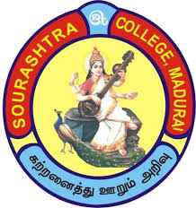
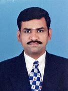

<!DOCTYPE html>
<html></html>
<head>
    <title>Sourashtra College</title>
    <link rel="icon" href="logo.jfif">
    <link rel="stylesheet" href="style.css">
    <link rel="preconnect" href="https://fonts.googleapis.com">
<link rel="preconnect" href="https://fonts.gstatic.com" crossorigin>
<link href="https://fonts.googleapis.com/css2?family=Roboto+Slab:wght@100..900&display=swap" rel="stylesheet">
</head>
<body bgcolor="lightblue"></body>
    <center>
    <h1>SOURASHTRA COLLEGE</h1>
    <h1>(AUTONOMOUS)</h1>
    <h3>(Affilicated to Madurai Kamaraj Unverisity)</h3>
    <p><b>College is a Linguistic Minority Co-educational Institution affiliated to Madurai Kamaraj University. It was established in 1967 with donations from philanthropists of Sourashtra community. The College is located in Vilachery Main Road, Madurai.</b></p><br>
    <header>
        <nav class="navbar">
            <a href="index.html"class="active">Home</a>
            <a href="register.html">Admissions</a>
            <a href="#">Student Success</a>
            <a href="result.html">Student Result</a>
            <a href="contect.html">Contect Us</a>
        </nav>
    </heder>
    <br><br>
    <br><br>
 <br><br>
 <br><br>
 <br>
 <br>
 <br>
 <br>

<div class="maindiv"></div>
<br>
<br>
<br>
<br>
<br>
<br>
<br>
<br>
<br>
<br>
<br>
<hr>
<iframe width="650" height="315" src="https://www.youtube.com/embed/YJ6utxqgPo0?si=q9uwf8bC4Ua06C-r" title="YouTube video player" frameborder="0" allow="accelerometer; autoplay; clipboard-write; encrypted-media; gyroscope; picture-in-picture; web-share" referrerpolicy="strict-origin-when-cross-origin" allowfullscreen></iframe>     <iframe width="650" height="315" src="https://www.youtube.com/embed/pT16txfYbbs?si=1JMYWQzPraK1WIFJ" title="YouTube video player" frameborder="0" allow="accelerometer; autoplay; clipboard-write; encrypted-media; gyroscope; picture-in-picture; web-share" referrerpolicy="strict-origin-when-cross-origin" allowfullscreen></iframe>
</center>
<p><b>CAMPUS DRIVE:
    Career Guidance Cell and Placement Cell are the dynamic bodies initiated to cater the needs of students in order to promote higher studies and further motivate,train and guide students for higher studies, competitive examinations and employment.
    </b></p>
    <p><b>MISSION:
        Our objective is to work as an ensemble with a commitment to inspire our students to acquire physical strength, intellectual curiosity and moral integrity. Most importantly we strive to inculcate an attitude for service to build a mutually supportive, communally co-operative and religiously tolerant society</b></p>
        <p><b>VISION:
            We envisage the steady progress of the grass roots of the society in general, and to uplift the economically, socially and educationally backward Sourashtra youth in particular, by providing a conducive environment to prepare for their successful take-off in their careers and also in real life as responsible citizens of India.</b></p>
            <hr>
<p>
    <div class="section"></div>
    <div class="hero"></div>
<article>
    <h1>Principal</h1>
    
    <br>
</article>
<content>Capt. Dr. K.R. SRINIVASAN is the Principal with a rich experience of 24 years in the field of education. With Economics as his core subject, his career spans over a considerable period in various capacities like Head, Department of Economics, Associate in NCC, IQAC Coordinator, Controller of Examinations, Member of College Development Council, Member in Autonomous Committee and etc. with many milestones to his credit. After completing his B.A. (Economics) from MKU College, Madurai, M.A.,(Hons in Economics) and M.B.A from Madurai Kamaraj University, Madurai, M.Phil.,(Economics) and M.Phil (Mgt) from MKU, Madurai, and also cleared State Level Eligibility Test (SLET),he started his teaching career . He obtained his Ph.D., degree in 2014 and has published 25 research articles in various journals at national, international level and attended 67 seminars, conferences and workshops to his credit. Capt. Dr. K.R. Srinivasn has been serving since 2006, and in various capacities the college has witnessed several improvements. Under his able guidance, six NCC cadets attended RDC camp, three NCC Cadets attended TSC camp ,one cadet attended IDC camp and many NCC Cadets got placed in various uniformed services. A visionary by nature, he is in the process of mentoring and guiding the students and staff to meet the institutional goals and objectives.<br><br>
</content>
<hr>
<div class="media"></div>
<b>
<center>
<h1>Location</h1>    
<iframe src="https://www.google.com/maps/embed?pb=!1m18!1m12!1m3!1d3930.4185590636553!2d78.07064567407654!3d9.89905427476553!2m3!1f0!2f0!3f0!3m2!1i1024!2i768!4f13.1!3m3!1m2!1s0x3b00cfb1b7e0fcc7%3A0xb8c2f759c352d079!2sSourashtra%20College!5e0!3m2!1sen!2sin!4v1732436118677!5m2!1sen!2sin" width="1000" height="300" style="border:0;" allowfullscreen="" loading="lazy" referrerpolicy="no-referrer-when-downgrade"></iframe>
</center>
<p>
Vilachery Main Road,
<br>
Pasumalai (P.O),
<br>
Madurai 625 004.
</p>
<p>
Phone Number : 8754209994 / 8754208885
</p>
<p>
website: www.sourashtracollege.com
</p>
</b>
<center>
<p>
The College has a strong Alumni Association which provides Free Noon Meals to poor students as one of its activities.
</p>
</b>
<hr>
</center>
</style>
</head>
<body></body>
</body>
</html>

    </form>
</section>
    </body>
</html>